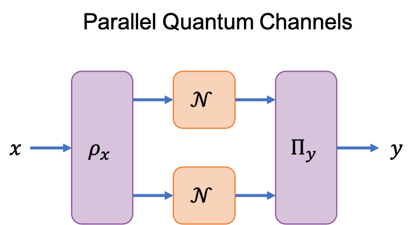

CV Multiplicativity
An objective of this software is to identify when parallel quantum channels have a communication value greater than the product of its constituents.

This super-multiplicativity is a nonclassical feature of quantum communication systems that results from the entanglement across the input and output Hilbert spaces of the two parallel channels. We define the communication value of two quantum channels $\;\mathcal{N}$ and $\;\mathcal{M}$ as super-multiplicative when
\[\text{cv}(\mathcal{N})\text{cv}(\mathcal{M}) < \text{cv}(\mathcal{N}\otimes\mathcal{M}).\]
For classical channels, the input and output Hilbert spaces are separable, hence, the communication value is always found to be multiplicative (equality holds for the above expression).
Certifying Super-Multiplicativity
To numerically verify that the communication value of two (or more) channels is super-multiplicative we take the following approach:
- Use the dual of
pptCVto evaluate an upper bound for $\;\text{cv}(\mathcal{N})$. - Use the
seesawCVto evaluate a lower bound for $\;\text{cv}(\mathcal{N}\otimes\mathcal{N})$. - Super-multiplicativity is confirmed if $\;\text{pptCV}(\mathcal{N}, \text{:dual})^2 < \text{seesawCV}(\mathcal{N}\otimes\mathcal{N})$.
Since the :dual of pptCV and seesawCV loosely bound the communication value. A confirmation of super-multiplicativity is certain however, false negatives may occur. For channels satisfying $\;\text{SEP}(A\;:\;B) = \text{PPT}(A\;:\;B)$ the pptCV method computes the exact communication value. For this case, we provide the following utility:
CVChannel.pptCVMultiplicativity — FunctionpptCVMultiplicativity(
channel1 :: Choi,
channel2 :: Choi;
singular_method::Symbol = :primal,
parallel_method::Symbol = :dual
) :: VectorThis function takes the Choi operators of two channels channel1 ($\mathcal{N}_{A_{1} \to B_{1}}$) and channel2 ($\mathcal{M}_{A_{2} \to B_{2}}$) and returns as an array:
[
pptCV( channel1 ),
pptCV( channel2 ),
pptCV( channel1 ⊗ channel2 ),
pprt( channel1 ⊗ channel2 ) - pptCV( channel1 ) * pptCV( channel2 )
]By default, it uses pptCVPrimal for the single channel uses, as this provides a lower bound, and pptCVDual for the parallel case, as this is always an upper bound. These defaults can be overridden with the keyword args singular_method and parallel_method which each accept the symbol values :primal and :dual.
pptCVMultiplicativity(
JN :: Matrix,
Ndin :: Int,
Ndout :: Int,
JM :: Matrix,
Mdin :: Int,
Mdout :: Int;
step1isdual = false :: Bool,
step2isprimal = false :: Bool
) :: VectorThis function takes the Choi operators of two channels $\mathcal{N}_{A_{1} \to B_{1}}$ and $\mathcal{M}_{A_{2} \to B_{2}}$ along with their input and output dimensions and returns $\text{pptCV}(\mathcal{N})$, $\text{pptCV}(\mathcal{M})$, and $\text{pptCV}(\mathcal{N}\otimes \mathcal{M})$. By default, it uses pptCVPrimal for the single channel values, as this provides a lower bound, and pptCVDual for the parallel case, as this is always an upper bound. If the dimension is such that the dual can't be used, there is an optional argument for using pptCVPrimal. There is also an optional argument to use pptCVDual for single channel values.
N-Fold Werner-Holevo Channel
CVChannel.wernerHolevoCVPPT — FunctionwernerHolevoCVPPT(
n :: Int64
d :: Int64,
A :: Matrix{Float64},
B :: Matrix{Float64},
g :: Matrix{Float64},
a :: Matrix{Float64}
):: Tuple{Float64, Matrix{Float64}}This function evaluates the linear program for the PPT relaxation of the communication value of the Werner-Holevo channel. The LP is written
\[ \max \{\langle a, v \rangle : Ax \geq 0 , Bx \geq 0 , \langle g , v \rangle = 1 \}\]
This function takes as inputs: $n$, the number of Werner-Holevo channels, $d$, the dimension of every Werner-Holevo Channel, and the constraints $A,B,g,a$ which are obtained from generalWHLPConstraints outputs. It returns the cvPPT value and the optimizer.
For $n \geq 10$ the solver may be slow.
CVChannel.generalWHLPConstraints — FunctiongeneralWHLPConstraints(
n :: Int,
d :: Int,
λ_vec :: Union{Vector{Float64},Vector{Int64}}
) :: Tuple{Matrix{Float64},Matrix{Float64},Matrix{Float64},Matrix{Float64}}This function returns the linear program constraints for calculating the PPT communication value of the Werner-Holevo channels run in parallel for arbitrary $n$. $n$ is the number of Werner-Holevo channels, $d$ is the dimension of every Werner-Holevo channel (assumed to be the same), and $\lambda_{\text{vec}}$ is such that $\lambda_{\text{vec}}[i]$ is the λ parameter for the $i^{th}$ Werner-Holevo channel. The returned matrices represent the linear maps enforcing the constraints on the optimizer. $A$ is the poistivity constraint, $B$ is the PPT constraint, $g$ is the trace constraint, and $a$ defines the objective function.
It takes $O(n2^{2n})$ steps to generate. If one wants a large dimension, we suggest you save the resulting constraints.
CVChannel.WHIDLP — FunctionWHIDLP(
d1 :: Int64,
d2 :: Int64,
λ :: Union{Int,Float64}
) :: Float64This function implements the linear program (LP) to determine the communication value of the Werner-Holevo channel tensored with the identity channel, when the problem is relaxed to optimizing over the PPT cone. (See cite for derivation). d1,d2 are the input-output dimensions of the Werner-Holevo and identity channel respectively. λ is the parameter defining the Werener-Holevo channel.